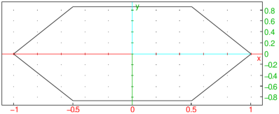

24.14.6 Similarity in the plane
See Section 25.12.6 for similarities in space.
The similarity
command creates a command to rotate and scale about a given point.
-
similarity takes three mandatory arguments and
one optional argument:
-
P, a point (the center of the rotation).
- r, a real number (the scaling ratio).
- θ, a real number (the angle of rotation).
- Optionally, G, a geometric object.
- similarity(P,r,θ) returns a new command which
rotates about P through an angle of θ and scales about P
by a factor of r.
- similarity(P,r,θ,G) returns and draws the
transformation of G.
Example
| s:=similarity(i,2,-pi/3); S1:=square(1-2i,2+i); S2:=s(S1) |
or:
| S1:=square(1-2i,2+i); S2:=similarity(i,2,-pi/3,S1) |

Note that for a point P and real numbers r and θ,
the command similarity(P,r,θ) is the same as
homothety(P,k*exp(i*a)).